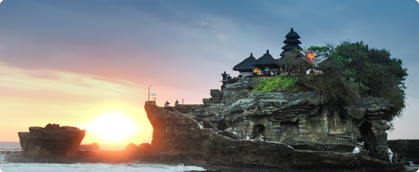
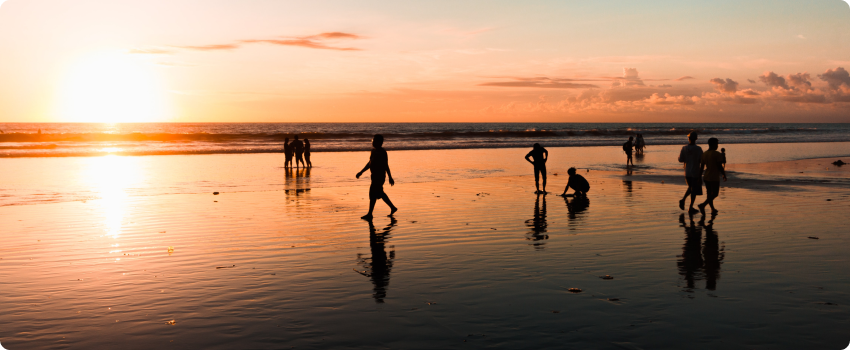
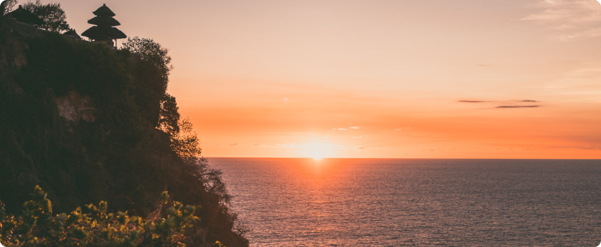
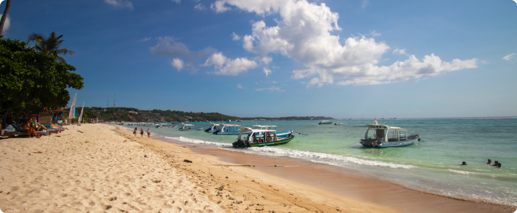
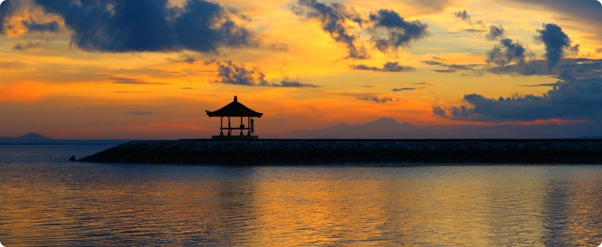

Bali
Siapa pun tak ada yang bisa menyangkal keindahan yang ditawarkan Pulau Dewata. Baru-baru ini, Bali didapuk menjadi destinasi paling populer di dunia versi Tripadvisor Travellers’ Choice tahun 2021. Tentu saja, bentangan alamnya yang indah berpadu sempurna dengan kearifan lokalnya yang istimewa menjadikan Bali sebagai destinasi #DiIndonesiaAja yang patut Sobat kunjungi setidaknya sekali seumur hidup!
Daftar wisata di Bali yang wajib dikunjungi
Ini merupakan rekomendasi wisata yang wajib anda ditangi jika di Bali dikarenakan sangat populer dan selalu menjadi prioritas wisatawan untuk dikunjungi saat pertama kali liburan ke pulau Bali.
Pura Tanah Lot
Nomer 1 dalalam daftar tempat wisata untuk dikunjungi Bali adalah pura Tanah Lot Bali. Selanjutnya, Tanah Lot jika diterjemahkan ke bahasa Indonesia artinya daratan di tengah laut. Tanah berarti daratan, Lot artinya laut.
Sesuai dengan namanya, saat anda liburan ke pura Tanah Lot, anda akan menemukan pura yang berada di atas batu karang besar dengan latar belakang laut selatan. Batu karang besar ini berada di tengah laut. Kemudian, pada saat air pasang, batu karang terlihat terpisah dengan daratan.
Daya tarik utama dari Tanah Lot temple terdapat pada keindahan pemandangan matahari terbenam, dengan siluet pura Tanah Lot. Berpadu dengan ombak laut selatan yang menerjang batu karang. Saat momen ini, akan terlihat banyak wisatawan yang akan mengambil foto dengan latar belangkang pura Tanah Lot.
Pantai Kuta
Objek wisata pantai Kuta akan selalu masuk dalam daftar tempat wisata di kunjungi di pulau Bali bagi wisatawan yang pertama kali liburan ke Bali. Ada beberapa hal utama yang membuat pantai Kuta ramai mendapat kunjungan wisatawan. Seperti, menawarkan pantai pasir putih dengan bentangan garis pantai sangat panjang, serta pemandangan sunset.
Kemudian, ombak di pantai Kuta lumayan besar dan cocok untuk aktivitas selancar pemula. Jika anda ingin berenang bersama anak-anak, maka anak anda harus selalu dalam pengawasan orang dewasa.
Aktivitas utama wisatawan saat liburan ke pantai Kuta adalah duduk santai di tepi pantai, berenang, jalan-jalan, dan melihat pemandangan sunset. Karena tingginya minat wisatawan liburan ke pantai Kuta, maka hampir setiap hari jalan raya sekitar pantai Kuta akan terjadi kemacetan.
Pura Uluwatu
Pura yang terletak di ujung barat daya pulau Bali di atas anjungan batu karang yang terjal dan tinggi serta menjorok ke laut ini merupakan Pura Sad Kayangan yang dipercaya oleh orang Hindu sebagai penyangga dari 9 mata angin.
Pura ini pada mulanya digunakan menjadi tempat memuja seorang pendeta suci dari abad ke-11 bernama Empu Kuturan. Ia menurunkan ajaran Desa Adat dengan segala aturannya. Pura ini juga dipakai untuk memuja pendeta suci berikutnya, yaitu Dang Hyang Nirartha, yang datang ke Bali pada akhir tahun 1550 dan mengakhiri perjalanan sucinya dengan apa yang dinamakan Moksa atau Ngeluhur di tempat ini. Kata inilah yang menjadi asal nama Pura Luhur Uluwatu.
Pura Uluwatu terletak pada ketinggian 97 meter dari permukaan laut. Di depan pura terdapat hutan kecil yang disebut alas kekeran, berfungsi sebagai penyangga kesucian pura.
Pura Uluwatu mempunyai beberapa pura pesanakan, yaitu pura yang erat kaitannya dengan pura induk. Pura pesanakan itu yaitu Pura Bajurit, Pura Pererepan, Pura Kulat, Pura Dalem Selonding dan Pura Dalem Pangleburan. Masing-masing pura ini mempunyai kaitan erat dengan Pura Uluwatu, terutama pada hari-hari piodalan-nya. Piodalan di Pura Uluwatu, Pura Bajurit, Pura Pererepan dan Pura Kulat jatuh pada Selasa Kliwon Wuku Medangsia setiap 210 hari. Manifestasi Tuhan yang dipuja di Pura Uluwatu adalah Dewa Rudra.
Pantai Nusa Dua Bali
Lebih lanjut, pantai Nusa Dua di sukai wisatawan domestik untuk di kunjungi saat liburan di Bali. Penyebabnya karena pantai Nusa Dua salah satu pantai terbersih di pulau Bali. Kebersihan pantai di Nusa Dua yang selalu terjaga membuat saya menaruh pantai Nusa Dua Bali di nomer satu dalam daftar 10 pantai terindah di Bali.
Penyebab pantai Nusa Dua sangat bersih, karena di sepanjang bibir pantai Nusa Dua terdapat hotel-hotel berbintang lima dan selalu ada petugas kebersihan yang membersihkan pantai.
Di dalam area kawasan ITDC Nusa Dua terdapat tiga pantai pasir putih. Yaitu, Pantai Samuh, pantai Geger dan pantai Mengiat Nusa Dua. ketiga pantai ini lebih cocok untuk berenang dan aman untuk anak-anak bermain di pinggir pantai. Karena gelombang ombak yang kecil, membuat semua pantai di Nusa Dua sangat cocok untuk wisata pantai bersama keluarga dan anak-anak di Bali.
Selain itu, garis pantai kawasan Nusa Dua menghadap ke timur; Oleh karena itu, semua kawasan pantai Nusa Dua tempat terbaik untuk melihat matahari terbit di Bali.
Pantai Sanur Bali
Pantai Sanur adalah pantai yang dikenal dengan sebutan Sunrise atau matahari terbit. Mengapa begitu? karena saat di pagi hari, mata ini sangat dimanjakan dengan leluasa melihat proses bangunnya sang Surya.
Ada begitu banyak daya tarik wisata di tempat ini karena tempat ini tak hanya menawarkan keindahan pemandangan alam pantai yang bersih dengan hamparan pasir putihnya yang lembut. Tetapi juga ombaknya yang tenang, cocok untuk aktivitas watersport seperti kayaking, seawalker, scuba diving, ataupun snorkeling.